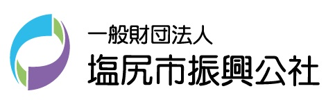
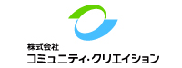

こんにちは世界！
日本各地でも続々と開催されているRails Girlsが、なんと長野県塩尻にやってきます！
興味はあるけど、これまで開催地が遠くて行けなかったという人、この機会にぜひご参加ください。
二日間のワークショップの間に、Ruby on Railsのすてきな世界を体験してみませんか？ワークショップは無料です。
募集は締めきらせていただきました。
たくさんのご応募ありがとうございました!
応募多数のため、抽選とさせていただきます。
抽選の結果は2月14日までにご連絡いたします。
Hello world!
Rails Girls comes to Shiojiri!
During the free two-day workshop we'll dive into the magical world of Ruby on Rails!
Application was closed on 6th of February. Thank you!
概要 コーチに教えてもらいながらプログラムを設計して、プロトタイプを作り、コーディングします。
必要なもの 自分のノートパソコン、やる気とキラリと光るイマジネーションを持ってきてください！
| 19:00 - 20:30 |
インストール・ディまずは、参加者同士、お互いに知り合いになりましょう。ご自分のノートパソコンをお持ちください。 それぞれのパソコンにRubyとRailsをインストールし、Rubyプログラミングの最初の一歩をコーチとともに始めてみましょう。 |
|---|
| 9:00 - 10:00 |
レジストレーション、コーヒー金曜日にRuby on Railsのインストールトラブルがあれば、朝のうちに解決しておきましょう。 金曜日にすべてうまく行ったひとは参加しなくてもOKです。 |
|---|---|
| 10:00 - 10:15 |
開会一日の流れの説明。オーガナイザーから一言。 |
| 10:15 - 12:30 |
ワークショップ |
| 12:30 - 13:30 | ランチ |
| 13:30- 14:00 |
ライトニングトークス |
| 14:00 - 16:30 |
ワークショップ |
| 16:30 - 18:00 頃 |
アフター・パーティ参加者、コーチ、スタッフによるパーティです。ワークショップで聞き損ねたことや RubyやRailsのこと、ステップアップの方法など、コーチに気軽に質問してみましょう。 |
会場:
塩尻インキュベーションプラザ(SIP)
JR塩尻駅から徒歩5分くらいです。
Rails Girls Shiojiri は以下のすばらしいパートナーとの共同開催です。
Rails Girlsは非営利イベントのパートナーあるいはスポンサーを探しています！ こちらまでご連絡ください！

一般財団法人塩尻市振興公社
私たち塩尻市振興公社は、OSSを活用した新たな産業振興として、地域企業を中核とした「信州OSS推進協議会」を設立し、各種セミナーや人材育成の開催をしています。またRuby、Rails等を採用した新しいシステム開発を地域企業・開発者と共に取り組んだり、コミュニティ支援も積極的に行っています。
 株式会社コミュニティ・クリエイション は Ruby、Ruby on Railsによるシステム開発を中心に、全国の企業及び自治体の情報システム活用を提案しています。主力サービスは、図書館システム、子育て支援システム、子育てポータルサイト。情報システムの活用を機会に「人、街、情報」を繋ぐことをビジョンとし、地域の子育てワークショップやファシリテーションを積極的に行っています。
 株式会社spice life
はECを通して世の中に笑顔を増やすサービスを作ります。spice lifeで開発するのはECの分野、ちょっと変わった、ちょっと新しい、ちょっと世の中を良くするようなECを、Railsで開発しています。
オリジナルTシャツ作成サービスtmixの印刷工場は塩尻にあり、ほぼ全ての商品を塩尻でプリントしていると言っても過言ではありません！
各地のRailsGirlsのスタッフTシャツ作成もしています。
株式会社spice life
はECを通して世の中に笑顔を増やすサービスを作ります。spice lifeで開発するのはECの分野、ちょっと変わった、ちょっと新しい、ちょっと世の中を良くするようなECを、Railsで開発しています。
オリジナルTシャツ作成サービスtmixの印刷工場は塩尻にあり、ほぼ全ての商品を塩尻でプリントしていると言っても過言ではありません！
各地のRailsGirlsのスタッフTシャツ作成もしています。
参加費はどのくらいかかりますか？ 無料です。申し込むときにはわくわくした気持ちだけあればいいです。
どのような人が参加するのでしょうか？ コンピュータを使ったことがある女性ならだれでも参加できます。これまでに開催されたRails Girlsイベントには様々な年齢の女性がやってきました。ご自分のノートパソコンをお持ちください。
男性も参加できますか？ 参加できます。ただし、必ずウェブアプリを作りたがっている女性と一緒に参加してください。申し込み人数が多い場合はお断りすることがあります。
プログラミングの経験があります。手伝うことはできますか？ たくさんのご協力のお申し出をいただきまして、ありがとうございます！ 今回はコーチの募集は終了いたしました。 次回以降のRails Girlsのコーチにご興味をおもちの方は、オーガナイザーまでお声がけ下さい。